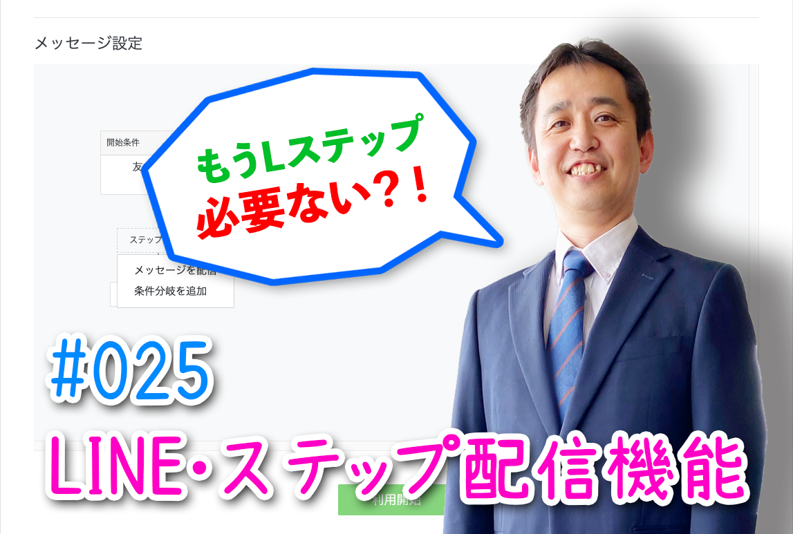
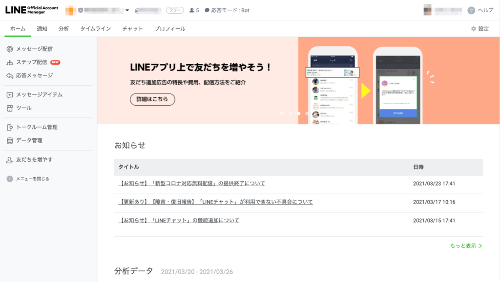
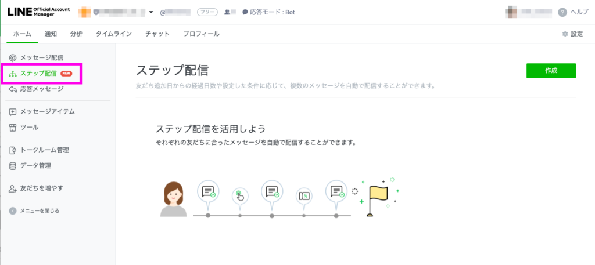
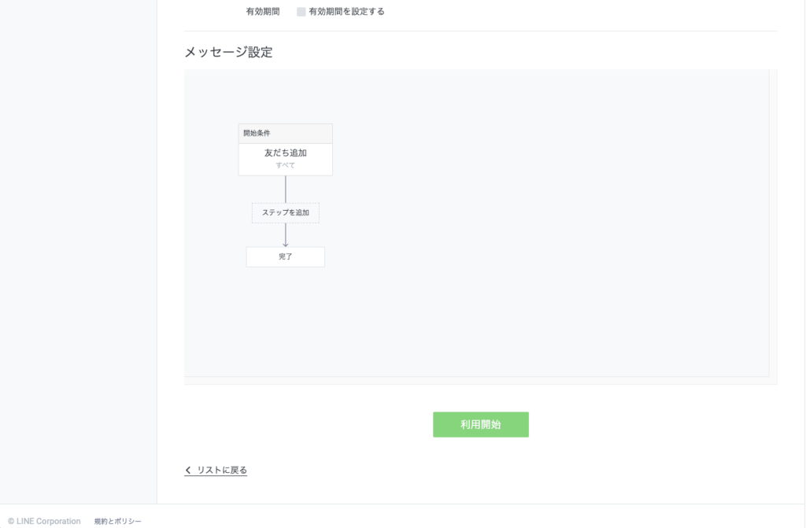
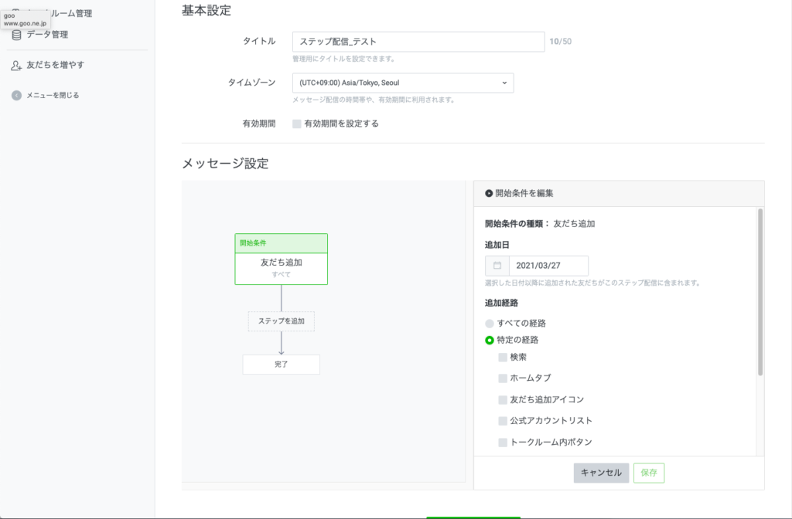
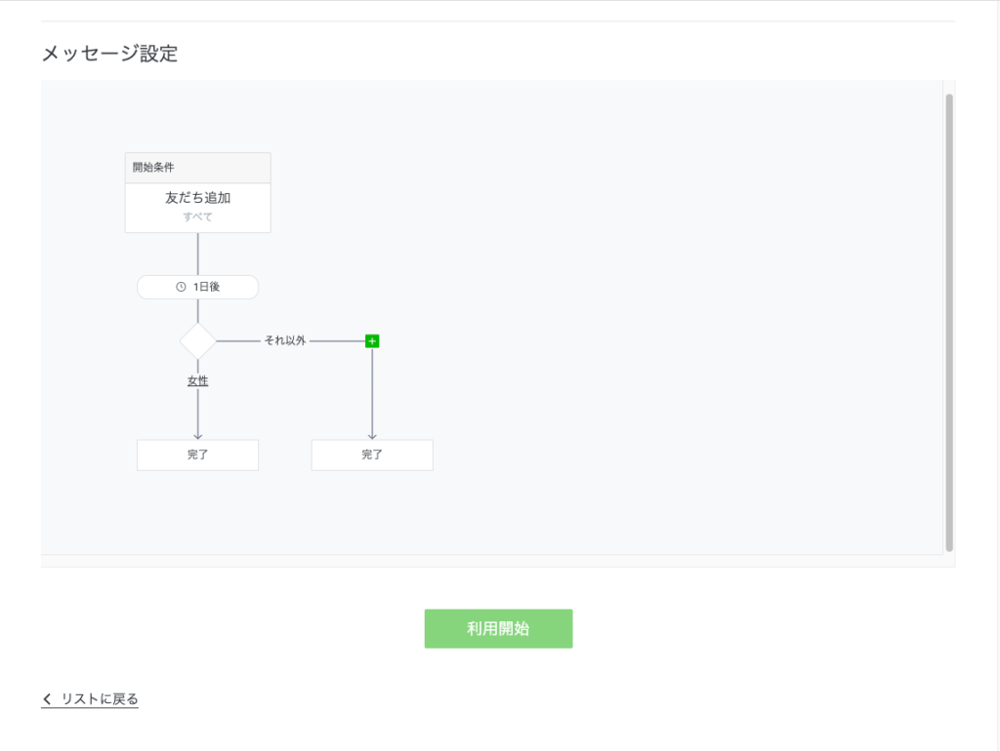
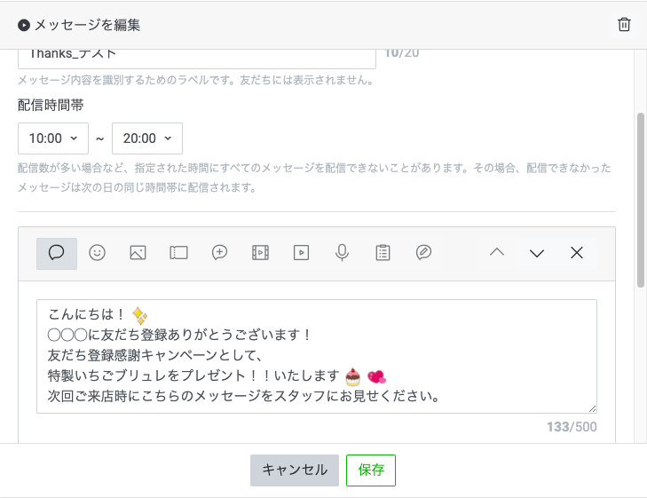
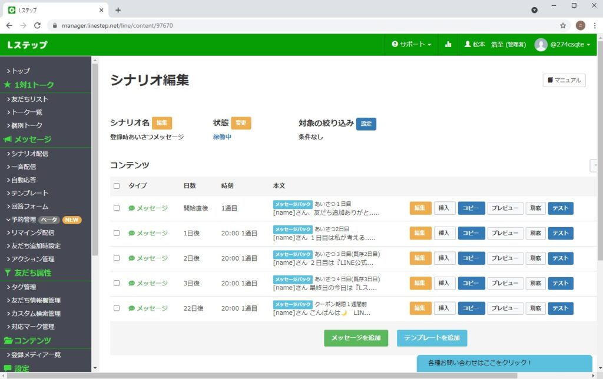

#025 ステップ配信機能追加

こんにちは！ 先月、LINE公式アカウントに「ステップ配信」機能が追加されました！ので、その解説をしていきます。
（１）LINE公式アカウントから「ステップ配信」が可能に！
ステップ配信とは、公式アカウントの友だちに向けて、段階的なメッセージ配信を自動でおこなうことができる機能をさします。
（例）
①友だち登録初日→「はじめまして！」メッセージ
②登録3日目→「自己紹介＆登録ありがとう特典プレゼント」メッセージ
③登録5日目→「現在実施中のキャンペーンのお知らせ＆お得なクーポンプレゼント」メッセージ
公式アカウントに友だち登録してもらったら、まず①の「はじめまして！」から始まり、②「登録ありがとう特典プレゼント」を配信、登録5日目に③「キャンペーン告知とクーポンプレゼント」を配信…というふうに、順を追って相手に迷惑に思われないペースで配信していきますよね。
友だち登録してもらったからと言って、毎日ばんばんメッセージ配信してしまうと、友だちに「ウザいな💦」と思われてしまい、ブロックされてしまいます。なので、この「迷惑に思われない配信ペース」を守ることがとても大事！ 今回の新機能「ステップ配信」によって、友だちがいつ登録してくれても、事前に設定しておいたスケジュール通りに上のようなメッセージ配信ができるようになったということです。
（２）設定方法
それでは、設定方法をみていきましょう。まずは、こちらLINE for Businessからログインし、ステップ配信するアカウントを選択します。

左バー「ステップ配信NEW」をクリックし、作成ボタンをクリック。


下に表示されている「メッセージ設定」のボックスが、配信スケジュール表だと思ってもらえば分かりやすいかもしれません。初期設定で、スケジュールの開始条件は「友だち追加」になっています。そこから登録してくれた「経路」別にさまざまな設定ができるようになっています。

ここから先は、勘のいい人なら何も見なくてもサクサク設定できるかも♪ 「開始条件」で友だち追加してくれた人「すべて」を選択し、「保存」します。「ステップを追加」ボタンをクリックし、そこから次のアクションを設定しましょう。
設定のコツは、「何日間隔でどんな配信をすると喜ばれるか」きちんと設計することです。いくらお得なクーポンやプレゼントを送るメッセージ配信であったとしても、毎日じゃんじゃん届くのでは友達に迷惑に思われ、ブロックされてしまいます。
「あ、そういえば昨日登録したんだったな」「今日はこんなお得なプレゼントをもらえた！」というふうに思ってもらえる間隔と内容をこころがけましょう。

また、２回目以降は「条件分岐を追加」ボタンから、友だちの属性によって配信内容を使い分けることもできます。たとえば配信内容を男女で使い分けたい場合などは、このように表示されます。
それぞれ、女性に喜ばれるクーポン、男性がお得になるプレゼントなど、きちんとメリットを感じてもらえるような仕掛けを工夫しましょう。

メッセージ内容については、普通のテキストメッセージのほか、過去のブログで説明した「クーポン」や「リッチメッセージ」、動画や音声他、色々選択できます。特に「クーポン」や「リッチメッセージ」などの設定方法は、ぜひ過去のブログを参考にしてくださいね！
その他、ステップ配信の設定の詳細については、こちらをご覧ください。LINE for Business上でも設定方法を解説しています。
（３）待望の新機能だが…
さて、今回のLINE公式アカウントの新機能「ステップ配信」について、ご理解いただけましたでしょうか？ これまで有料の運営ツールを導入しないと使えなかった機能なので、お得感を感じている人も多いでしょう！配信後の分析ツールも充実しています。
しかし、友だち数の多いアカウントはご注意を！ 配信されたメッセージは課金対象となります。また、１ヶ月間のメッセージ配信通数の上限を超過した場合は、配信自体が停止されてしまいますので、事前に必ずご自身のアカウントのプラン内容を確認してください。
また、LINE for Businessの設定画面は、少し分かりづらいというか使い勝手が悪い印象もあります💦 matsumotoおすすめのLステップの画面は、こんな感じ。

過去の記事にも書いた通り、Lステップは費用もお手頃で、便利機能満載の運営ツールです。LステップやLinyなどの有料ツールを導入せずにある程度アカウントの友だち数が増えてしまうと、途中でそれらを導入した時に「友だちゼロ」状態になってしまう、という恐ろしいリスクもあります😱💦
今回の新しい「ステップ配信」機能追加が、そのような状況を招く原因にならなければいいな…、と個人的には危惧しています💧
matsumotoのオススメは、ある程度友だち追加が見込める場合（始める前になかなか分からないかもしれませんが…）は、できるだけ早い時点で費用の安いLステップを導入してしまうことです。
これからLINE公式アカウントを導入される方で、もし有料ツールを入れるべきかどうか迷っておられる方がいたら、ぜひmatsumotoにご連絡くださいね！（このサイトからmatsumotoを友だち登録してもらうと、登録特典で初回60分無料相談ができます）
まずはLINE公式アカウントを開設しましょう！
●LINE公式アカウントの開設方法はこちら
●LINE公式アカウントをオススメする理由はこち
●LINE公式アカウントでできることはこちら
●Lステップでできることはこちら